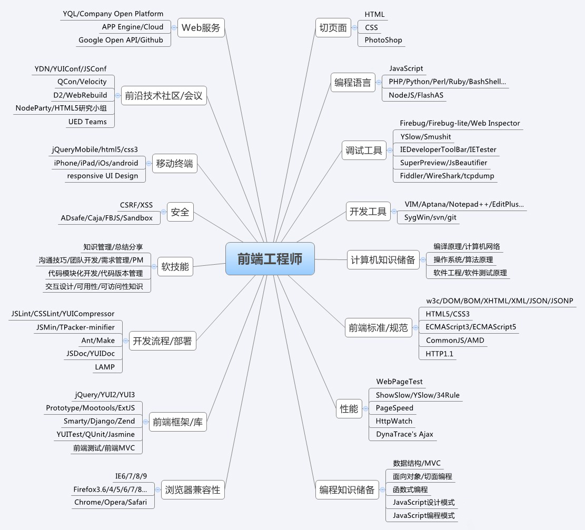
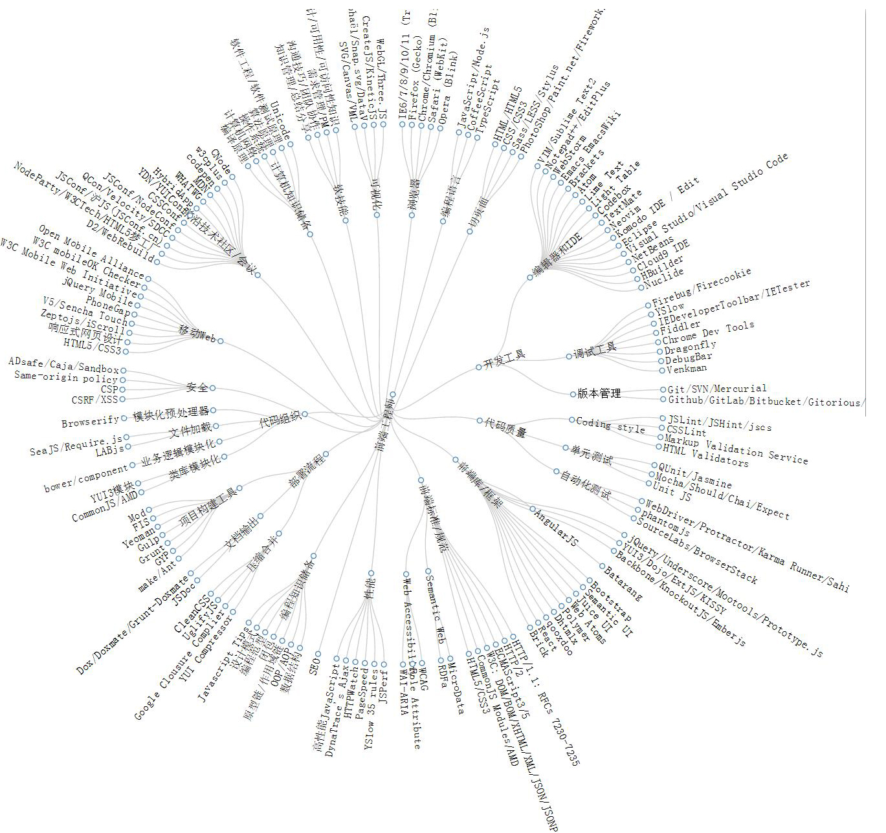

大前端介绍
damo. ©2019
power by fairyly
## 📢 Agenda ### 1️⃣ 前端的发展+ ### 2️⃣ 前端的现状+ ### 3️⃣ 前端的未来+
## 📢 一、前端的发展 #### 1.网页设计师(PC 端)(流行） #### 2. 切图仔 (移动端)（口头） #### 3.（假的）web 前端工程师 #### 4.（真的）web 前端工程师 #### 5. 全栈工程师（前后通吃） #### 6. 全周期工程师（需求，设计，开发，运营）
- 2009年Ryan Dahl发布了node，node是一个基于V8引擎的服务端JavaScript运行环境 - 2009年发布了第五代JavaScript, - 2009年AngularJS诞生，随后被谷歌收购 - 2010年backbone.js诞生 - 2011年React和Ember诞生 - 2014年Vue.js诞生 >早期的网页开发是由后端主导的，前端能做的也就是写一些布局，操作一下DOM
#### 2.切图仔 （ PC + 移动端 ） >div+css html5+css3 jQuery
#### 3.(假的）web 前端工程师 >前端模块化，工程化
#### 4.（真的）web 前端工程师 >懂一些产品，懂一些设计，懂一些服务，理解业务，懂架构


#### 5.全栈工程师（前后通吃） > Node.js
#### 6.全周期工程师（需求，设计，开发，运营） >
### 2️⃣ 二、前端的现状+ >
##### 服务端 >restfulAPI, GraphQL > express, mongodb > koa > Meteor > Sails > hapi > Restify > egg > GraphQL
##### 移动端 > 原生： android, ios > 混合： RN，Weex, Flutter > 小程序： 微信/支付宝 mpvue, wepy, Taro
##### 桌面端 > Electron > NW.js
## 前端框架 > SPA， 组件化, 虚拟 dom ,双向数据绑定 > angular > react > vue
### PWA, 快应用
## 部署 >手工---> 自动化 ----> 智能化 > docker，k8s
## 未来( 只要能用 js 实现的肯定都会去用 js 实现) >es9 , TS, severless, WebAssembly > 人工智能 > 物联网 > 5G
Thank You!
祝大家都能写出没有 Bug 的代码！
fairyly